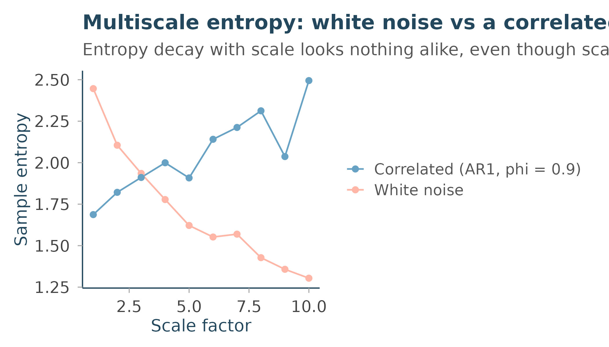

Entropy and multiscale complexity
Source:vignettes/entropy-and-complexity.Rmd
entropy-and-complexity.RmdThree entropy measures, three different questions
Rtractor’s entropy family answers three related but distinct questions:
-
perm_entropy()– how evenly distributed are the ordinal patterns (which of the last few points was biggest, second-biggest, and so on) in this series? -
sample_entropy()– how likely is it that two short segments of this series, which match closely, continue to match one point further? -
multiscale_entropy()– how does that same “likely to keep matching” question change as the series is progressively smoothed (coarse-grained) across a range of temporal scales?
The first two are single-scale, single-number summaries. The third is where things get more interesting, and where the difference between “random” and “complex” actually shows up.
Sample entropy: template matching
sample_entropy() (Richman & Moorman 2000) compares
every pair of length-m templates in the series (excluding
self-matches) within a fixed Chebyshev-distance tolerance
sd(x) * r, then does the same for length
m + 1, and reports
-log(matches at m+1 / matches at m). A series that’s mostly
unpredictable has few long matches relative to short ones, so
sample_entropy() is high; a very regular series keeps
matching, so it’s low:
set.seed(1)
white_noise <- rnorm(1000)
smooth_signal <- sin(seq(0, 40 * pi, length.out = 1000))
sample_entropy(white_noise)
#> [1] 2.450377
sample_entropy(smooth_signal)
#> [1] 0.2165497Why one number isn’t enough: the multiscale idea
Here’s the problem multiscale_entropy() (Costa,
Goldberger & Peng 2002) was built to solve. Compare two series with
very different structure but comparable single-scale entropy:
pure white noise, and an autoregressive (AR(1)) process with strong
positive autocorrelation –the latter is smoother and more predictable
point-to-point, but has real structure that plays out over multiple
points, not just one:
set.seed(1)
white_noise <- rnorm(2000)
correlated_signal <- as.numeric(
stats::filter(rnorm(2000), filter = 0.9, method = "recursive")
)multiscale_entropy() coarse-grains the series
(non-overlapping block-averaging) at each integer scale factor from
1 up to scale_max, and computes
sample_entropy() on each coarse-grained version –
crucially, using a tolerance held fixed relative to the
original series’ standard deviation at every scale, not
each coarse-grained series’ own (shrinking) standard deviation. That’s
the detail that makes entropy values comparable across scales at all;
see ?multiscale_entropy.
mse_white <- multiscale_entropy(white_noise, scale_max = 10)
mse_corr <- multiscale_entropy(correlated_signal, scale_max = 10)
round(mse_white$mse, 3)
#> [1] 2.446 2.105 1.935 1.778 1.622 1.552 1.569 1.428 1.358 1.304
round(mse_corr$mse, 3)
#> [1] 1.687 1.821 1.911 1.999 1.908 2.141 2.212 2.313 2.037 2.495Look at the shape of these two profiles, not just the
scale-1 value. White noise’s entropy decreases steadily as the scale
grows – coarse- graining destroys the (already trivial) point-to-point
unpredictability, leaving less and less structure for
sample_entropy() to find. The correlated signal starts
lower (it’s more locally predictable than white noise at scale 1) but
its entropy doesn’t decay the same way – coarse- graining
doesn’t destroy its structure nearly as fast, because that structure
plays out over several points rather than just one. By scale 5 or so,
the correlated signal’s entropy has overtaken white noise’s.
library(ggplot2)
mse_df <- data.frame(
scale = c(mse_white$scale, mse_corr$scale),
mse = c(mse_white$mse, mse_corr$mse),
series = rep(c("White noise", "Correlated (AR1, phi = 0.9)"), each = 10)
)
ggplot(mse_df, aes(scale, mse, colour = series)) +
geom_line() +
geom_point() +
scale_colour_manual(values = unname(rtractor_palette("core")[c("steel_blue", "coral")])) +
labs(
title = "Multiscale entropy: white noise vs a correlated signal",
subtitle = "Entropy decay with scale looks nothing alike, even though scale-1 values are similar",
x = "Scale factor", y = "Sample entropy", colour = NULL
) +
theme_rtractor()
This is the whole point of the multiscale approach: a single-scale entropy value can’t tell “genuinely unpredictable” apart from “structured across multiple scales” – you need the profile across scales to see the difference. This is the same reasoning behind why physiological signals (heart rate, EEG, gait) are usually characterised by their full MSE curve rather than a single entropy number, in the original Costa et al. line of work.
Choosing m and r
Both sample_entropy() and
multiscale_entropy() default to m =
2, r = 0.15 – the standard
convention from Costa et al.’s original MSE papers, and a reasonable
starting point for most physiological time series. m is the
template length being compared; r is the tolerance as a
fraction of the series’ own standard deviation. Larger r
tolerates more noise before two templates stop “matching,” which tends
to reduce entropy overall; smaller m needs less data to
estimate reliably but captures less structure. Changing either changes
the absolute entropy values, so keep them fixed across signals you
intend to compare.
References
Bandt C, Pompe B. Permutation entropy: a natural complexity measure for time series. Phys Rev Lett 2002;88:174102.
Richman JS, Moorman JR. Physiological time-series analysis using approximate entropy and sample entropy. Am J Physiol Heart Circ Physiol 2000;278(6):H2039-H2049.
Costa M, Goldberger AL, Peng CK. Multiscale entropy analysis of complex physiologic time series. Phys Rev Lett 2002;89:068102.